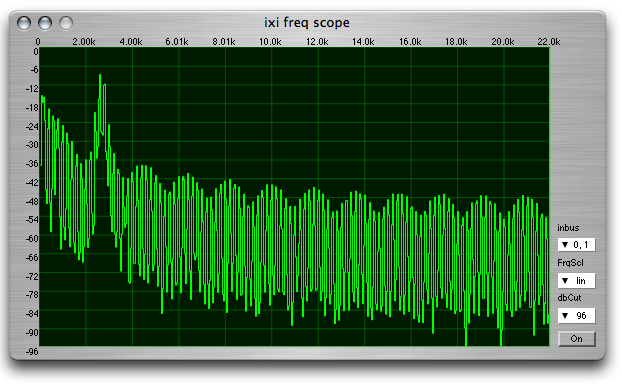

ixiQuarks : FreqScope

| Freq Scope |
| The Freq Scope is a frequency scope based on Lance Putnam's FreqScope. It performs Discrete Fast Fourier Transform on the signal and represents the results graphically. It shows the amplitude of frequencies in Decibels. You can choose which bus to listen to and also whether the frequency distribution is linear or logarithmic. (pitch is logarithmic). |